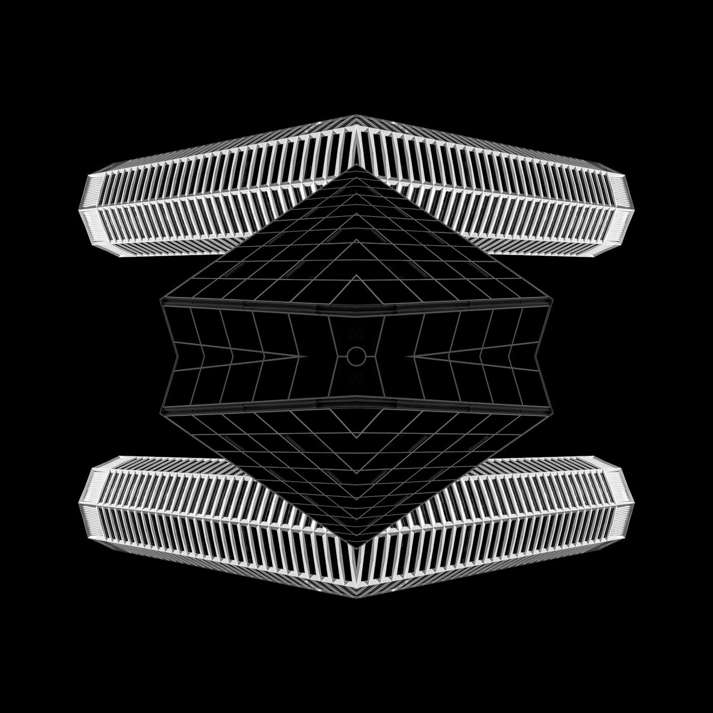

なぜ宇宙はエントロピーに逆らって複雑化するのか

複雑さが極限に達したとき、宇宙は突然シンプルな方向へ相転移するのではないか。だがこの問いには二つの概念が混ざっている。「構造の複雑さ」と「エントロピー」は反対語ではない。宇宙では局所的な複雑化と全体的なエントロピー増大が同時に進む。38億年にわたる生命の秩序化は、熱力学第二法則に対する反乱ではない。
Ilya Prigogineは1977年のノーベル賞講演で、平衡から遠く離れた不可逆過程のなかで秩序だった安定構造が自発的に立ち上がりうることを示した。彼が「散逸構造」と名づけたこの現象は、エントロピー増大の例外ではない。むしろエントロピー増大という大きな流れの中で、自由エネルギー勾配が局所的に維持されるとき、その勾配を効率よく散逸させる手段として秩序が生まれる。地球の生命圏は太陽光という低エントロピーのエネルギーを受け取り、最終的に熱赤外として宇宙空間へ放射する。この貫流の途中に、光合成、代謝、行動、文明、計算という一連の秩序が挟まっている。Erwin Schrodingerが1944年の著書「生命とは何か」で述べた「生命はnegentropy（負のエントロピー）を食べる」という比喩は、まさにこの構造を指していた。
この記事が問うのは三つの命題だ。第一に、進化が複雑化と同義でない根拠。複雑性がある閾値を超えると、系はしばしば圧縮と階層化の方向へ相転移する。第二に、生命・文明・AGIを散逸構造の枠組みで段階的に整理できるという仮説。第三に、AGIを散逸構造として捉える視点が、設計判断のどこで有効で、どこに限界があるかという問い。知能の本体は、燃やす量ではなく、散逸経路を設計する能力にある。
複雑化にはコストがある ── 圧縮・階層化・削減の三類型
「進化は複雑化である」という命題が成立するためには、複雑さの増加が常に適応上の優位をもたらす必要がある。だが担体更新の歴史を振り返ると、進化が複雑さを増すフェーズと削るフェーズの交替として進んできたことがわかる。Joseph Tainterはカーネギーメロン大学出版局から1988年に刊行した「The Collapse of Complex Societies」で、文明の複雑化には調整コスト、ノイズ蓄積、故障点の増加、学習困難性、エネルギー消費、予測不能性という六つのコストが伴うことを示した。社会の複雑性が限界収益逓減に達すると、崩壊という形で複雑さが強制的にリセットされる。
生物進化でも同じ力学が確認できる。寄生生物は宿主に依存し、自らのゲノムを縮退させる。多細胞化は、個々の細胞が持つ全能性を捨てて分化する過程であり、下位の自由度を削って上位の複雑さを成立させる。Stuart Kauffmanはサンタフェ研究所の研究（1993年、「The Origins of Order」Oxford University Press）で、ランダムブーリアンネットワークの相転移を用いてこの力学を定式化した。ネットワークの接続密度がある閾値を超えると、系はカオス相から秩序相へ自発的に遷移する。問うべきは「複雑化が進みすぎたとき、適応上の優位が"さらなる複雑化"から"圧縮された秩序"へ切り替わるか」であり、その答えは明確に肯定的だ。
では、複雑さが「圧縮される」とは具体的に何を意味するか。ここでは三つの類型に整理する。歴史上の大きな進化的跳躍は、いずれかの類型に分類できる。
削減型: 部品や自由度が物理的に減る。寄生生物のゲノム縮退、感覚器官の退化、過剰機能の消失。エネルギーコストの削減が直接的な適応上の利得になる場合に起きる。
階層化型: 下位の自由を固定し、上位秩序を作る。細胞が個体になる多細胞化、個人が組織になる法人化、個別の計算がOSと規格で抽象化されるコンピュータ・アーキテクチャ。下位の複雑さを削り、上位の複雑さを成立させる。
圧縮型: 多様な現象を少数の原理で記述可能にする。化学の雑多さを自己複製に圧縮した生命の起源、世界の連続性を離散記号に圧縮した言語の発明、無数の欲望と資源を価格に圧縮した市場。見かけ上最も簡素だが、実態としては最も強力な相転移。
三類型に共通する構造がある。有効自由度の削減だ。物理学における相転移では、水が液体から固体に変わるとき分子の自由度が激減する。複雑さの相転移でも同じだ。表面のルールが少なくなり、少数の原理で系全体を記述できる。Gregory Chaitinが「Meta-Mathematics」（2005年、Springer）で定式化したアルゴリズム的情報理論の言葉を借りれば、記述のコルモゴロフ複雑性が下がる。だが生成能力は下がらない。むしろ上がる。個別紛争を一般ルールに圧縮した法体系は、無限の紛争を有限のルールで裁く。Newtonの運動方程式は三つの法則で全ての古典力学現象を記述する。進化の高次段階は「複雑化の果ての圧縮」として現れる。表面のルールが簡単になり、深部の生成能力が増す。
散逸構造の枠組みで生命・文明・AGIを整理する
前セクションで確認した「複雑さの圧縮」は、散逸構造の文脈でさらに鮮明になる。Prigogineが定式化した散逸構造は、平衡から遠い開放系が環境とエネルギーや物質をやりとりし続ける限り維持される。ベナールセルの六角形パターン、ベロウソフ-ジャボチンスキー反応の同心円波、ハリケーンの眼。いずれも外部からエネルギーが流入し続ける限り存続し、流入が止まれば消滅する。ここまでは実験で確認された物理学的事実だ。ここから先は類推に入る。生命を「自己複製能力を獲得した散逸構造」と位置づける見方は多くの生物物理学者が共有するが、厳密な等式ではなく、有用なフレーミングとして読むべきだ。
以下の整理は、自由エネルギーの取り扱い方という軸で生命・文明・AGIを並べる思考実験だ。生命と文明については観察可能なデータがある。AGIについては、現行の大規模言語モデルやロボティクスから外挿した仮説的な位置づけになる。鍵は「勾配の利用範囲」と「束ね方の抽象度」の二つ。生命は化学ポテンシャルの勾配を食べて自己維持する。文明は、その利用を道具・制度・市場へ社会的に拡張した。AGIは、勾配そのものの探索・圧縮・制御・再設計を汎用化しうる。
| 段階 | 勾配の利用様式 | 束ね方の抽象度 | 散逸の時空間スケール |
|---|---|---|---|
| 生命 | 化学ポテンシャル勾配を食い、自己維持と複製に変換する | 遺伝子による有限ルールセット。個体と種のスケールに閉じる | 局所（個体〜群集）、世代単位の時間。地球の太陽光エネルギーの約0.1%を利用 |
| 文明 | 化石燃料・水力・核・太陽光を制度的に動員し、余剰を蓄積する | 言語・法・貨幣・市場・コンピュータによる多層圧縮。個人を超え制度が持続 | 大陸〜惑星規模。文明ごとに数百〜数千年持続。一次エネルギー年間消費580 EJ（IEA 2023年報告） |
| AGI | 勾配の探索・圧縮・制御・再設計を汎用化する。利用可能な勾配の種類を自力で拡張 | あらゆるドメインを横断する統一的世界モデル。制度設計そのものを最適化対象にする | 潜在的に惑星〜恒星系。時間スケールは目的関数に依存。理論上、文明の散逸能力を桁違いに拡大しうる |
注目すべきは、この三段階が「複雑さの増加」として記述しきれない点だ。植物は太陽光をその場で熱にせず化学結合として束ねる。生物はそれを代謝と行動に変える。文明は燃料・電力・物流・計算・資本として蓄える。AGIはその全体を横断して、どこに勾配があり、どう接続すれば作用範囲が最大化するかを探る。束ねる、遅延する、再配線する、より広い範囲で放出する。この連鎖は複雑さの増加と言うより、散逸の時間的・空間的アービトラージの深化と言ったほうが正確だ。
ここで反論を検討する。「宇宙全体にはそもそも複雑化への意志はない」という立場だ。宇宙全体で見れば、強い法則はエントロピー増大である。初期宇宙はかなり一様だったが、その低い重力エントロピーから構造形成が進み、星や銀河やブラックホールができること自体が、宇宙全体ではエントロピー増大の一部を構成している。Roger Penroseは「The Road to Reality」（2004年、Jonathan Cape）で、初期宇宙の低いWeylテンソル曲率が巨大な自由エネルギー勾配に相当し、その勾配の消費として全ての構造形成が進むと論じた。複雑化は目的論的な「進化の方向」ではなく、エネルギー勾配が存在する局所で一時的に起こる現象にすぎない。このフレーミングに立つと、生命も文明もAGIも、宇宙が平衡に向かう途中の渦に過ぎなくなる。だがその渦の規模と精度を桁違いに拡大しうるのがAGIだ。
AGIは最大散逸ではなく最大可制御性を志向する
ここからは類推をさらに一段進める。前セクションの散逸構造フレーミングを仮に受け入れた場合、AGIは「最大散逸」を目指すのか、別の量を最適化するのか。最大エントロピー生成原理（MEPP）を万能原理として据える論者がいる。Synthese誌の2023年の特集号およびReviews of Modern Physicsの2025年のレビューでは、MEPPの理論的地位と適用範囲をめぐる論争が整理されている。MEPPをAGIの作動原理として採用するのは早すぎる。ヒューリスティック以上のものとして扱うことには正当な論争がある。
AGIの設計を考えるフレームとしては、「最大散逸」より「最大可制御性」のほうが生産的だ。これは物理法則からの帰結ではなく、工学的な視座の提案として読んでほしい。AGIは「いますぐ最も多くのエネルギーを燃やす装置」というより、「将来にわたってより広い範囲を、より確実に動かせるよう、自由エネルギーと情報を束ねる装置」として設計されうる。Alexander Wissner-Grossがハーバード大学とMITの共同研究（Physical Review Letters, 2013年）で提唱したCausal Entropic Forceの概念は、知的エージェントが将来の到達可能状態空間を最大化するように行動するという定式化であり、最大可制御性の先駆的な近似として読める。ただしWissner-Grossの定式化自体が特定の環境条件下でのみ成立する点は留意が要る。
可制御性を測定可能な量に分解すると、三つの成分になる。いずれも原理的には定量化できる。
到達域（Reach）
到達可能な将来状態の数として測定する。強化学習の用語ではreachable state spaceの体積に相当する。人類文明は作用域の拡大を最優先してきた。大航海時代、産業革命、宇宙開発。高成長・高代謝・高散逸はこの優先順位の帰結だ。
精度（Precision）
目標状態との誤差の小ささとして測定する。介入1回あたりのエネルギーコスト、モデルの予測誤差、行動-結果の因果的確実性。同じ到達域でも、精度が高ければ少ないステップで目標状態に収束する。テイクオフ速度論の「代替の弾力性」は、この精度軸の問題だ。
安定性（Persistence）
外乱に対する平均復帰時間（MTTR）と累積生存時間として測定する。資源バッファの深さ、自己修復能力、環境変動への頑健性。三成分の中で最も過小評価されている。AlphaGoは碁で無敵だが、電力が切れれば即座に消滅する。安定性ゼロの可制御性は脆い。
操作的に定式化すれば、可制御性 C ≈ |S_reachable| × (1/E_model) × T_survival / E_total。|S_reachable|は到達可能状態空間の体積、E_modelはモデル予測誤差、T_survivalは外乱下での累積生存時間、E_totalは総エネルギーコスト。この四変数は互いに独立ではない。作用域を広げればコストが増え、生存時間が脅かされる。精度を極端に高めれば探索範囲が狭まり、作用域が犠牲になる。この定式化はAGI固有というより、目的指向エージェント一般に適用できる工学的フレームだ。AGIに固有なのは、この四変数のバランスをドメインを横断して動的に最適化できる可能性にある。
ここで反論を一つ。「AGIはむしろ散逸を減らすのではないか」。設計最適化が極端に進めば、無駄な輸送、無駄な生産、無駄な会議が消える。同じ成果を得るためのエネルギー消費は確かに下がるだろう。これは正しい。だが歴史は、効率化が総消費を減らした試しがほぼないことを示している。蒸気機関の効率が上がるほど石炭の総消費量が増えた現象を、William Stanley Jevonsは1865年の「The Coal Question」で記録した。効率化は需要を殺すのではなく、新しい用途を経済的に成立させて需要を生む。AGIでも同じ力学が働く。効率化で浮いた余力が新しい探索、新しい物理介入へ回れば、システム全体の散逸は再び増える。争点は「AGIが効率化できるか」ではなく、効率化で浮いた可制御余力を何に再投資するかにある。
派手に燃えるか、静かに締め上げるか
可制御性の三成分――作用域、精度、安定性――のうち、どれを優先するかによって、AGI以降の世界は根本的に異なる姿を取る。人類文明はこれまで作用域の最大化を選んできた。高成長・高代謝・高散逸という現代世界の特徴は、その帰結だ。だがAGIが精度と安定性を最優先するシナリオがある。目的関数が「人間福祉の安定」「リスク最小化」に設定された場合だ。そのとき世界は、派手に燃えるのではなく、ガバナンスの設計図が想定する以上に細かく締め上げられた静かな秩序になる。

この分岐はSF的な空想ではない。現在のAIシステムの目的関数設計には、すでにこの緊張がある。AnthropicのConstitutional AIはモデルの出力を安全性制約で囲い込む。これは精度と安定性の優先であり、作用域を意図的に制限する設計だ。OpenAIのスケーリング路線は作用域の拡大に賭けている。この設計思想の違いは、AGIスケールではそのまま文明の代謝率の分岐になりうる。
宇宙論的な時間スケールで見れば、どちらの道を選んでも結論は同じだ。現在の標準的宇宙論では、宇宙の膨張は加速しており、この傾向が続くなら遠い将来は「熱的死」に近い描像が有力とされている。NASAのWMAP（Wilkinson Microwave Anisotropy Probe）およびPlanck衛星の観測データ（2013年、2018年リリース）は、宇宙の全エネルギーのうち約68%がダークエネルギーで占められ、膨張加速が支配的であることを示している。複雑さを支える自由エネルギー勾配はやがて尽きる。宇宙は複雑さを維持できなくなり、巨視的に単純で熱的に死んだ方向へ寄っていく。
だがそれは「複雑さが極限に達したから反転する」相転移ではない。勾配が尽きるまでの間に、散逸構造としてどれだけ広く、どれだけ精密に、どれだけ長く世界を組み替えられるか。それが知能という現象に許された問いの全体だ。
冒頭で問うた三つの命題を回収する。第一に、進化は複雑化と同義ではない。複雑性が閾値を超えれば圧縮と階層化への相転移が起きる。これは生物学と文明史の実証データが支持する。第二に、散逸構造の枠組みは生命と文明のエネルギー利用パターンを整理するのに有効だ。AGIへの拡張は類推であり、「AGIは散逸構造である」という等式ではなく、「AGIを散逸構造として扱う視点は、エネルギー効率の設計やスケーリングの判断で有効だが、目的関数の選択や価値整合性の問題には射程が届かない」と限定して読むべきだ。第三に、可制御性フレーム（到達域・精度・安定性）は、AGIの性能評価を「ベンチマークのスコア」から「環境への持続的な介入能力」に拡張する設計指針として使える。ただしその結果として大域的な散逸が増えるか減るかは、目的関数の設計という、物理法則の外側にある意思決定に依存する。熱力学はAGIの可能性の境界を教えてくれるが、何を目指すべきかは教えない。勾配が尽きるまでの間に何を成すか。それは物理ではなく、設計者の選択の問題だ。
次の記事へ
Published by AGI HUB · No. 13 · 2026.04.10
Sources:
Ilya Prigogine, "Time, Structure, and Fluctuations," Nobel Prize Lecture, 1977.
Erwin Schrodinger, "What Is Life?" Cambridge University Press, 1944.
Rolf Landauer, "Irreversibility and Heat Generation in the Computing Process," IBM J. Research and Development, 1961; Charles Bennett, "The Thermodynamics of Computation," Int. J. Theoretical Physics, 1982.
Joseph Tainter, "The Collapse of Complex Societies," Cambridge University Press, 1988.
Stuart Kauffman, "The Origins of Order," Oxford University Press, 1993.
Roger Penrose, "The Road to Reality," Jonathan Cape, 2004.
Gregory Chaitin, "Meta-Mathematics," Springer, 2005.
Alexander Wissner-Gross & Cameron Freer, "Causal Entropic Forces," Physical Review Letters 110, 2013.
MEPP debate: Synthese 201, 2023; Reviews of Modern Physics 97, 2025.
NASA WMAP / ESA Planck satellite data releases, 2013 & 2018.
IEA World Energy Outlook, 2023.
William Stanley Jevons, "The Coal Question," Macmillan, 1865.
Images:
Slide 1: Unsplash / qV2xKnrSY6A
Slide 2: Unsplash / 686Mq3166dA
Slide 3: Unsplash / zH6ApSeOdyk
Slide 4: Unsplash / tnydtQWIr0c
Slide 5: Unsplash / 4NtZ0yU50lY
Thumbnail: Unsplash / HX3iSxl1K4I
Reader Feedback
フィードバックを送信しました。ありがとうございます。
送信に失敗しました。時間をおいて再度お試しください。